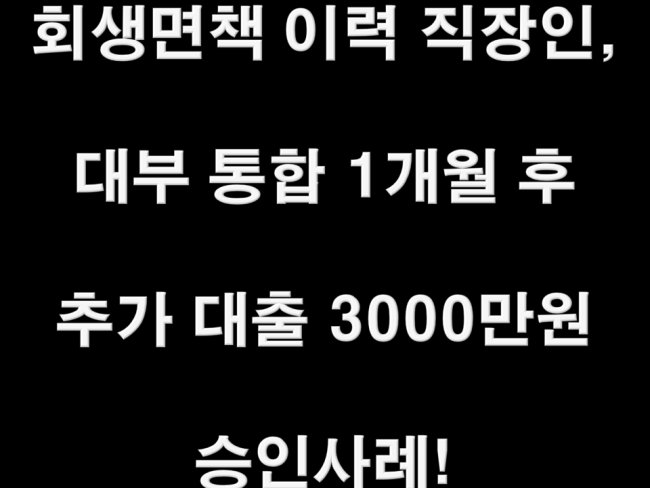
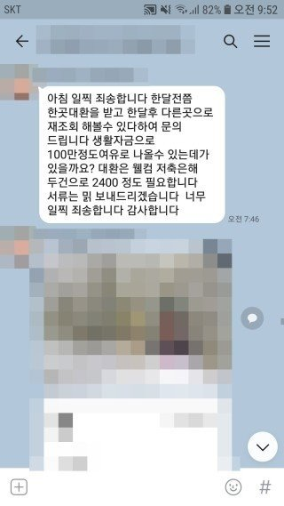
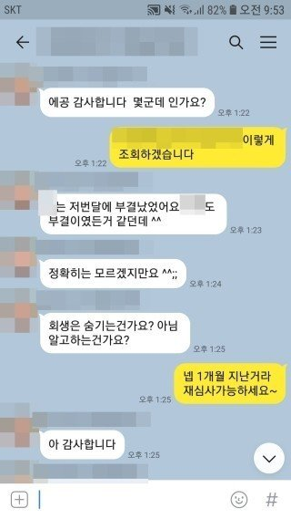
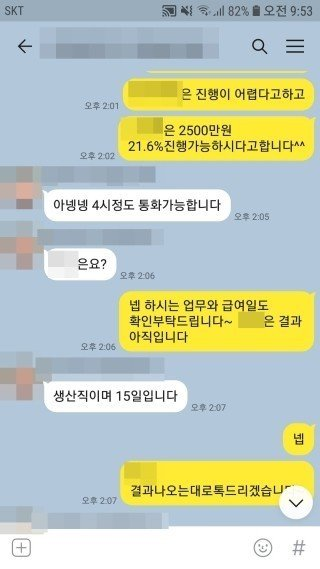
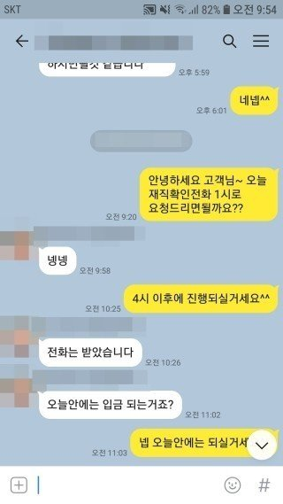

회생면책이력 4대가입 직장인, 대부 통합 1개월 후 추가대출 3000만원 승인사례!!

안녕하세요^^ 뱅크앤론 상담사 유미광 과장입니다^^ 제가 진행해드린 김** 고객님의 대출 사례를 소개해
드리겠습니다. 김** 고객님의 경우 얼마전 회생 면책을 받으신 4대보험가입 직장인이셨습니다. 재직기간은
4년, 월급여 320만원을 수령중이셨습니다. 사용중이던 대출은 1개월전 대부 2건을 대환하며 받으셨던 세람
저축2500만원과 회생중 받으신 웰컴저축2건 2400만원이 있으셨습니다. 회생중에 받으신 웰컴저축은행을
정리하며, 추가자금이 필요하셔서 기존에도 상담진행해드렸던 저에게 다시 문의주신다고하셨습니다. 이에
회생 이력이 있음에도, 한도가 잘 나올 수있는 금융사 3곳을 선정하셔 조회 해 드린 결과, 한 금융사에서 추
가로 2500만원 21.6%에 진행가능하시다는 결과를 받으셨고, 진행중 증액되어 3000만원으로 승인되셨습니
다. 대출의 1차 목적이셨던, 웰컴저축 대환하시면서 생각하시던것보다 여유자금도 많이 나와 고객님께서도
매우 만족하시고 기뻐하셨습니다 ^^ 아래는 고객님과 저의 실제 상담카톡 내용올려드리니 참고하시기 바랍
니다. 감사합니다^^
[출처] 회생면책이력 4대가입 직장인, 대부 통합 1개월 후 추가대출 3000만원 승인사례!! (뱅크앤론 (직장인대출,개인회생자대출,개인회생대출 등..)) | 작성자 뱅크앤론 유과장



